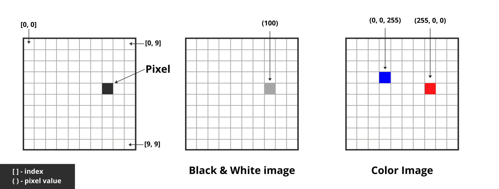

Introduction to Computer vision¶
According to wikipedia:
Computer vision is an interdisciplinary scientific field that deals with how computers can gain high-level understanding from digital images or videos. From the perspective of engineering, it seeks to understand and automate tasks that the human visual system can do.
For humans, its very easy. Most of the time it is automatic. But for computers the task of understanding images is extremely difficult. Why is it important?
If you see, we have images and videos all around us. Giving computers the ability to understand and learn from these images and videos will allow us to automate many task. One such example of automation is self-driving cars.
Applications of Computer Vision¶
Computer vision is now prevalent in many areas of your life, whether you realize it or not. We apply computer vision algorithms to
Analyze movies
Football games
Hand gesture recognition (for sign language)
License plates
Medicine
Surgery
Military and
Retail
We even use computer visions in space! NASA’s Mars Rover includes capabilities to model the terrain of the planet, detect obstacles in its path, and stitch together panoramic images.
This list will continue to grow in the coming years. This should give you the idea of how wide the applications of the field are. Its every where!
Requirements¶
OpenCV¶
OpenCV (Open Source Computer Vision Library) is an open source computer vision and machine learning library. The library has more than 2500 optimized algorithms, which includes a comprehensive set of both classic and state-of-the-art computer vision and machine learning algorithms.
It supports languages like C++, Python, and more. OpenCV-Python is an API for OpenCV to unleash the power of Python (simplicity) and the OpenCV C++ (performance) API at once. Python-OpenCV is just a wrapper around the original C/C++ code.
This library uses NumPy and all its array structures convert to and from NumPy arrays. This also means we can integrate it easily with other libraries like SciPy and Matplotlib (these make use of NumPy).
Note: During the time of development of this course, 4.4.0 is the latest version of OpenCV. All the code examples will work fine if you have the same version installed.
Numpy¶
NumPy is a library for the Python programming language that (among other things) provides support for large, multidimensional arrays. Why is that important? Using NumPy, we can express images as multi-dimensional arrays. Representing images as NumPy arrays is not only computationally and resource efficient, many other image processing and machine learning libraries use NumPy array representations as well. Furthermore, by using NumPy’s built-in high-level mathematical functions, we can quickly and easily perform numerical analysis on an image.
Scipy¶
SciPy adds further support for scientific and technical computing.
Matplotlib¶
Matplotlib is a plotting library in python.
Since you all are using anaconda distribution, all these library comes pre-installed along with python. So, you don’t have to install anything. In-case you are using some other distribution, you can use the below commands to install all the above libraries:
If you are using pip :
> pip install opencv-python
> pip install numpy
> pip install scipy
> pip install matplotlib
If you are using conda :
> conda install -c conda-forge opencv
Note: Knowledge of python and numpy are pre-requisite for the course.
Lets check our setup to make sure we have everything working.
from utils import test_setup
test_setup()
Python Version : 3.8.5 (default, Aug 5 2020, 09:44:06) [MSC v.1916 64 bit (AMD64)]
OpenCV Version : 4.4.0
Numpy Version : 1.19.1
SciPy Version : 1.5.0
Matplotlib Version : 3.3.1
In-case of any error, please contact your mentor. They will help you with the setup.
Images¶
Before moving any further, its very important to understand how images are stores in computers. For computers, images are nothing but matrix of numbers.
Pixel is the smallest unit in an image. We can think of a pixel as the color or the intensity of light that appears in a given place in our image. Most pixels are represented in two ways: grayscale and color.
In a grayscale image, each pixel has a value between 0 and 255, where 0 corresponds to “black” and 255 corresponds to “white”. The values in between 0 and 255 are varying shades of gray, where values closer to 0 are darker and values closer to 255 are lighter.
In a color image, each pixel is generally represented using the RGB color space – one value for the red component, one for green, and one for blue. Each component has values ranging from 0 to 255. We then combine these values into an RGB tuple in the form (red, green, blue). This tuple represents our color.
If we think of an image as a grid, each square in the grid contains a single pixel. In a black & white image, each pixel is represented by a single number (ranging from 0-255) and in-case of a color image, each pixel is represted by a pair of 3 numbers (RGB).

Cordinate System
Imagine our grid as a piece of graph paper. Using this graph paper, the point [0, 0] corresponds to the upper left corner of the image. As we move down, the value of y increases and if you go towards the right, then the value of x increase, respectively.
In the above image, indexes are represented using [ ]
Note: The cordinate system used in computer vision is a bit different from our maths cordinate system. Instead of starting at lower-left corner, we start upper-left corner.
Enough talking!
Coding time¶
Just like every other library in python, to use opencv we will have to import it.
import cv2
Loading images¶
we can read an image from the disk using cv2.imread() method. It takes an image path as input and returns a numpy array.
img = cv2.imread('images/yoda.jpeg')
since, its a numpy array we can simply access the dimension using shape attribute
img.shape #(height, width, channels)
(900, 1200, 3)
You’ll notice that the image has a width of 1200 pixels, a height of 900 pixels, and 3 channels (the RGB components of the image) is represented as a NumPy array, of shape (900, 1200, 3).
Note: The NumPy shape may seem reversed to you (specifying the height before the width), but in terms of a matrix definition, it actually makes sense. When we define matrices, it is common to write them in the form (# of rows × # of columns). Here, our image has a height of 900 pixels (the number of rows) and a width of 1200 pixels (the number of columns) – thus, the NumPy shape makes sense (although it may seen a bit confusing at first). Understanding this different is important when working with opencv.
Displaying images¶
To display the actual image on the screen, we will use cv2.imshow. The first parameter is a string, the “name” of our window. The second parameter is an image object. But if you run only this command, the image will only be shown for a split second and then you will have a blank window. Hence, we will also use cv2.waitKey to pause the excution of the script until we press a key on our keyboard.
cv2.imshow('Image', img)
cv2.waitKey(0)
cv2.destroyAllWindows()
Using a parameter of 0 in cv2.waitKey, indicates that any keypress will un-pause the execution. After displaying the image and waiting for the user, we want to destroy all the windows created by opencv. We will use cv2.destroyAllWindows to do that.
Note: Whenever you have opencv windows that are not responding, you can simple call cv2.destroyAllWindows once and will close the windows.
Saving images¶
To save any image, we will use cv2.imwrite. The first parameter is a string, the “name” of the image. The second parameter is an image object.
cv2.imwrite('new_yoda.png', img)
True
OpenCV has automatically converted our JPEG image to PNG for us! No further effort is needed on our part to convert between image formats.
Questionaire¶
If you can answer all these questions then you have understood all the important concepts in this notebook.
What is a pixel?
Cordinate System used by numpy and opencv?
How to read images?
How to display them? what does
cv2.waitKeyandcv2.destroyAllWindowsfunctions do?How to save them?
Discuss these questions with your peers and your mentors, if you have any doubt.
In the next notebook, we will learning more about accessing individual pixel values and manupulating them. We will also learn how to draw different types of shapes.